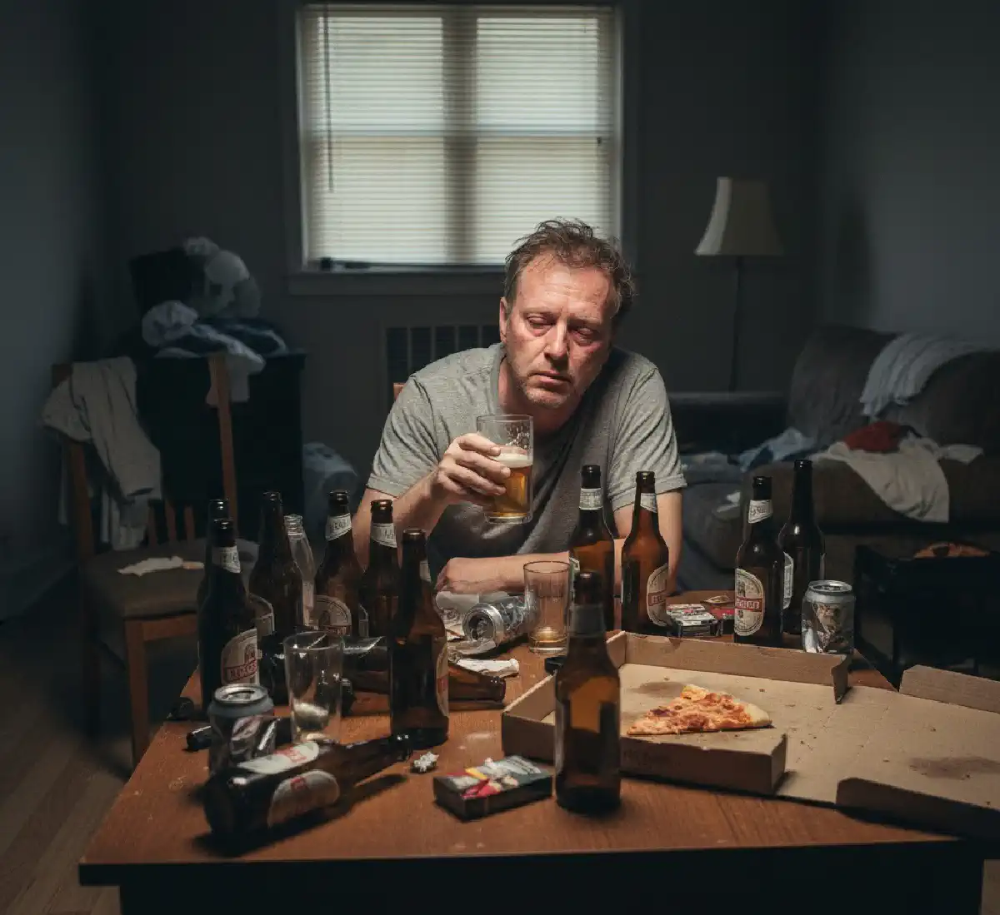

+38(068)
79 72 782
+38(068)
79 72 782Алкоголизм выходного дня
Признаки, причины, последствия и лечение регулярного употребления алкоголя


Бесплатная консультация, работаем круглосуточно 24/7
Признаки, причины, последствия и лечение регулярного употребления алкоголя

Дата написания: 25 нояб. 2025 г.
Последнее обновление: 20 окт. 2026 г.
Алкоголизм выходного дня — распространённое бытовое название модели употребления алкоголя, при которой человек регулярно выпивает преимущественно по пятницам, субботам и воскресеньям, сохраняя трезвость в рабочие дни. Такое поведение нередко воспринимается как безобидная привычка, поскольку человек продолжает работать, выполнять семейные обязанности и вести привычный образ жизни. Однако систематическое употребление больших доз спиртного даже один-два раза в неделю может причинять существенный вред здоровью и повышать риск формирования алкогольной зависимости. Важно понимать, что алкоголизм выходного дня не является отдельным официальным медицинским диагнозом. Для оценки состояния имеют значение частота употребления, количество алкоголя, потеря контроля и последствия для повседневной жизни. Причинами подобной модели поведения могут становиться хронический стресс, эмоциональное переутомление, социальные традиции, проблемы в семье и привычка связывать отдых исключительно со спиртными напитками. Постепенно алкоголь начинает восприниматься как необходимый элемент выходного дня, а попытки провести свободное время без него вызывают раздражение или психологический дискомфорт.
Регулярное употребление алкоголя по выходным способно повышать вероятность развития зависимости вследствие повторяющегося воздействия этанола на головной мозг, систему вознаграждения и механизмы формирования привычек. Во время употребления спиртного человек может испытывать временное расслабление, снижение тревожности и улучшение настроения. Мозг постепенно связывает эти ощущения с определёнными обстоятельствами: окончанием рабочей недели, встречами с друзьями, просмотром спортивных мероприятий или семейными праздниками. Со временем формируется устойчивая поведенческая связь между наступлением выходных и желанием выпить. При повторяющихся эпизодах чрезмерного употребления может снижаться контроль над количеством спиртного, увеличиваться его объём и появляться трудности с отказом. При этом зависимость развивается не у каждого человека, регулярно употребляющего алкоголь. Риск зависит от индивидуальной предрасположенности, интенсивности употребления, психического здоровья и социальных факторов. Если человек замечает усиление тяги, повторные эпизоды потери контроля или продолжает пить несмотря на последствия, рекомендуется консультация нарколога для своевременной оценки состояния.
Главное различие между так называемым алкоголизмом выходного дня и тяжёлой формой алкогольной зависимости заключается не в календарных днях употребления, а в выраженности симптомов, степени утраты контроля и последствиях для здоровья. Человек может употреблять спиртное исключительно по субботам, но при этом выпивать большие количества, не контролировать продолжительность застолья и сталкиваться с серьёзными последствиями. Другой пациент может употреблять алкоголь чаще, но иметь иную степень выраженности расстройства. Хроническая алкогольная зависимость характеризуется устойчивыми нарушениями контроля над употреблением, приоритетом алкоголя над другими интересами и продолжением употребления вопреки негативным последствиям. У части пациентов развиваются толерантность и физическая зависимость с симптомами отмены. Однако для постановки диагноза не обязательно ежедневное употребление спиртного. Регулярные алкогольные эпизоды по выходным могут быть проявлением уже существующего расстройства. Поэтому лечение алкогольной зависимости определяется клинической картиной, а не исключительно частотой употребления. Важную роль играют продолжительность проблемы, выраженность тяги, наличие запоев и предыдущие попытки отказаться от алкоголя.
Регулярное употребление алкоголя в конце недели часто связано с сочетанием психологических, социальных и поведенческих факторов. Для одних людей спиртное становится способом временно снизить напряжение после тяжёлой работы, для других — обязательным элементом общения с друзьями или семейного отдыха. Распространённой причиной является убеждение, что несколько дней трезвости полностью компенсируют употребление больших доз алкоголя в выходные. Значительное влияние оказывают привычки окружения, доступность спиртных напитков, реклама алкогольной продукции и отсутствие альтернативных способов восстановления после стресса. Некоторые люди используют алкоголь для борьбы с одиночеством, тревогой, бессонницей или эмоциональным истощением. При этом временное облегчение может сменяться ухудшением сна, снижением настроения и усилением тревожности. Постепенно формируется повторяющийся цикл: напряжённая рабочая неделя, ожидание алкоголя, употребление спиртного и тяжёлое восстановление после выходных. При устойчивом характере такой модели поведения может потребоваться психологическая помощь при алкогольной зависимости, направленная на выявление причин употребления и формирование более безопасных способов справляться с эмоциональными трудностями.
Первые признаки проблемного употребления алкоголя по выходным могут оставаться незаметными для самого человека и его родственников. Часто всё начинается с постепенного увеличения количества спиртного, изменения привычек отдыха и появления устойчивого ожидания пятницы или субботы. Человек заранее планирует употребление алкоголя, покупает спиртные напитки и воспринимает предложение отказаться от них как нежелательное ограничение. Настораживающими признаками являются регулярная потеря контроля над количеством выпитого, употребление большего объёма алкоголя, чем планировалось, провалы в памяти, конфликты с близкими и выраженное ухудшение самочувствия на следующий день. После выходных могут появляться головная боль, слабость, тошнота, раздражительность, снижение концентрации внимания и нарушения сна. Некоторые люди начинают употреблять алкоголь утром для облегчения неприятных симптомов. Особенно важно обратить внимание на повторные безуспешные попытки сократить употребление и продолжение выпивки несмотря на проблемы со здоровьем. Наличие подобных симптомов является основанием для обследования, поскольку раннее выявление проблемного употребления позволяет своевременно начать лечение алкоголизма и снизить риск дальнейших осложнений.
О переходе привычного употребления алкоголя к зависимости могут свидетельствовать изменения поведения, которые постепенно становятся устойчивыми. Человек перестаёт ограничиваться заранее запланированным количеством спиртного, продолжает пить дольше предполагаемого времени и испытывает выраженное желание повторить употребление. Выходные всё чаще строятся вокруг алкоголя, а другие занятия начинают утрачивать привлекательность. Дополнительными признаками становятся раздражение при невозможности выпить, сокрытие реального количества спиртного, обещания прекратить употребление, которые не выполняются, и повторяющиеся конфликты с родственниками. Важным диагностическим признаком является продолжение употребления несмотря на очевидный вред для здоровья, работы или семейных отношений. Иногда человек сохраняет длительные периоды трезвости, но при каждом употреблении теряет контроль. Это не исключает наличия алкогольного расстройства. Если возникают сомнения, необходимо оценить не только частоту выпивки, но и её последствия. Анонимная консультация нарколога помогает обсудить проблему, определить выраженность симптомов и выбрать дальнейшую тактику без необоснованных выводов о тяжести зависимости.
Неспособность расслабиться без алкоголя может формироваться вследствие устойчивой психологической связи между употреблением спиртного и ощущением отдыха. Если человек на протяжении длительного времени завершает рабочую неделю алкогольными напитками, подобный ритуал постепенно становится привычной реакцией на усталость, стресс или необходимость переключиться с рабочих задач. Алкоголь временно изменяет активность нервной системы и может вызывать субъективное чувство расслабления. Однако этот эффект непродолжителен и нередко сопровождается последующим ухудшением качества сна, раздражительностью и тревогой. Со временем привычные способы отдыха — прогулки, спорт, общение, путешествия или домашние занятия — могут восприниматься как менее привлекательные. У некоторых людей проблема связана с нераспознанными тревожными или депрессивными расстройствами, хроническим стрессом и эмоциональным выгоранием. В таких ситуациях важно не просто запретить употребление алкоголя, а определить причины психологического дискомфорта. Консультация психолога при алкогольной зависимости помогает выявить эмоциональные триггеры, изменить привычные реакции и постепенно восстановить способность отдыхать без спиртного.
Психологическая зависимость от алкоголя характеризуется устойчивым желанием употреблять спиртные напитки ради получения приятных ощущений, уменьшения напряжения или облегчения эмоционального состояния. При регулярном употреблении по выходным формируется система привычных ситуаций, вызывающих алкогольную тягу. Например, человек может испытывать желание выпить после получения зарплаты, окончания рабочей недели, встречи с определённой компанией или возникновения семейного конфликта. Постепенно мысли об алкоголе начинают занимать значительное место в повседневной жизни. При этом отсутствие выраженного похмелья или физических симптомов отмены не исключает проблемного употребления. Психологическая тяга способна сохраняться даже после продолжительного периода трезвости, особенно при возвращении в привычную обстановку. Для преодоления подобных механизмов применяются психотерапевтические методы, работа с мотивацией, изменение поведения и развитие навыков самоконтроля. Лечение психологической зависимости от алкоголя направлено на устранение факторов, поддерживающих употребление, а также на обучение человека новым способам справляться со стрессом и предупреждать повторные эпизоды выпивки.
Алкоголизм выходного дня не имеет отдельной официальной классификации стадий. Однако в развитии проблемного употребления можно условно выделить несколько последовательных изменений. На начальном этапе спиртное используется преимущественно для отдыха и общения, а употребление кажется полностью контролируемым. Затем может формироваться устойчивый ритуал, при котором выходные всё чаще ассоциируются с алкоголем. Следующий этап связан с увеличением количества выпитого, эпизодами потери контроля, ухудшением самочувствия и появлением конфликтов. При дальнейшем прогрессировании у части людей развивается алкогольная зависимость с выраженным потягом, снижением способности самостоятельно отказаться от спиртного и продолжением употребления вопреки негативным последствиям. В некоторых случаях формируется физическая зависимость, сопровождающаяся толерантностью и синдромом отмены. Однако такая последовательность не является обязательной: симптомы могут появляться в другом порядке, а тяжесть заболевания определяется совокупностью диагностических признаков. Для оценки состояния необходима диагностика алкогольной зависимости, позволяющая отличить эпизодическое рискованное употребление от сформировавшегося расстройства.
Безопасного для здоровья количества алкоголя, которое гарантированно исключало бы все неблагоприятные последствия, не установлено. Риск зависит от общего объёма употреблённого этанола, скорости употребления, состояния организма, возраста, принимаемых лекарственных препаратов и сопутствующих заболеваний. Особенно опасно употребление большого количества спиртного за короткий промежуток времени, поскольку оно повышает вероятность алкогольного отравления, травм, нарушений сердечного ритма и других острых осложнений. Даже если человек употребляет алкоголь только один раз в неделю, это не делает большие дозы безопасными. Значение имеет и суммарное количество спиртного за определённый период. Отдельное внимание следует уделять крепости напитков: большой объём пива или вина может содержать значительное количество этанола, несмотря на относительно невысокую крепость. При беременности, некоторых заболеваниях и приёме несовместимых с алкоголем лекарств требуется полный отказ от спиртного. При регулярных эпизодах чрезмерного употребления стоит обратиться к специалисту, даже если выраженная зависимость пока не сформировалась. Чем меньше алкоголя употребляет человек, тем ниже многие связанные с ним риски для здоровья.
Распространённое заблуждение заключается в том, что алкогольная зависимость развивается исключительно при ежедневном употреблении спиртных напитков. В действительности важную роль играют потеря контроля, выраженность тяги, количество алкоголя и его влияние на повседневную жизнь. Человек может сохранять трезвость с понедельника по пятницу, но каждую субботу употреблять спиртное до сильного опьянения, сталкиваться с провалами в памяти или нарушать ранее принятые решения. Подобная модель поведения может сопровождаться клинически значимыми признаками алкогольного расстройства. Отсутствие ежедневной потребности в спиртном не означает отсутствия психологической зависимости или других негативных последствий. При этом само по себе употребление один раз в неделю ещё не подтверждает диагноз алкоголизма. Для его установления необходима оценка диагностических критериев и истории употребления. Рекомендуется обратить внимание на повторяющиеся попытки сократить выпивку, невозможность остановиться после первых порций алкоголя и постепенное увеличение количества спиртного. Раннее лечение алкогольной зависимости может помочь предотвратить дальнейшее прогрессирование расстройства и восстановить контроль над собственным поведением.
Чрезмерное употребление алкоголя по выходным может приводить как к острым нарушениям здоровья, так и к долгосрочным последствиям. Во время сильного опьянения ухудшаются координация движений, внимание, скорость реакции и способность принимать обдуманные решения. Повышается риск падений, дорожно-транспортных происшествий, травм, конфликтов и опасного поведения. Большие дозы этанола способны вызывать тошноту, многократную рвоту, обезвоживание, нарушение сознания и алкогольную интоксикацию. У некоторых людей после употребления возникают выраженная тахикардия, перебои в работе сердца и повышение артериального давления. Повторяющиеся эпизоды чрезмерного употребления увеличивают вероятность заболеваний печени, поджелудочной железы, сердечно-сосудистой системы и некоторых видов рака. Дополнительную опасность представляет сочетание алкоголя со снотворными, седативными препаратами, опиоидами и другими веществами, угнетающими центральную нервную систему. При признаках тяжёлого алкогольного отравления требуется экстренная медицинская помощь. Снятие алкогольной интоксикации должно проводиться с учётом состояния пациента, а не только выраженности похмельных симптомов.
Алкоголь воздействует на центральную нервную систему, изменяя активность нейромедиаторов, участвующих в регуляции настроения, сна, памяти, координации движений и поведения. Во время опьянения может возникать временное ощущение расслабления, однако одновременно ухудшаются внимание, способность оценивать риски и контроль над действиями. При употреблении больших доз возможны нарушения памяти, включая эпизоды, когда человек не способен вспомнить происходившие события. После выведения алкоголя из организма некоторые люди сталкиваются с тревожностью, раздражительностью, повышенной чувствительностью к внешним раздражителям и нарушением сна. Регулярные эпизоды чрезмерного употребления способны отрицательно влиять на когнитивные функции и эмоциональную устойчивость. При длительном злоупотреблении повышается риск развития алкогольной зависимости и связанных с ней неврологических осложнений. Следует различать обычное ухудшение самочувствия после опьянения и алкогольный синдром отмены, который возникает у людей с сформировавшейся физической зависимостью. При выраженном треморе, стойкой тревоге, нарушениях сознания или других тяжёлых симптомах необходима медицинская оценка. Лечение тремора и тревоги после алкоголя зависит от причин их возникновения и общего состояния пациента.
Регулярное употребление больших доз спиртного может оказывать отрицательное влияние на сердечно-сосудистую систему, печень, желудочно-кишечный тракт и обмен веществ. Этанол способен провоцировать повышение артериального давления, учащённое сердцебиение и нарушения сердечного ритма. Иногда после интенсивного употребления алкоголя в выходные возникают эпизоды фибрилляции предсердий, которые могут развиваться даже у людей без ранее диагностированных серьёзных заболеваний сердца. Печень участвует в метаболизме этанола и при повторяющемся чрезмерном употреблении подвергается повышенной нагрузке. Возможны развитие жировой болезни печени, алкогольного гепатита и в дальнейшем цирроза. Со стороны пищеварительной системы могут наблюдаться тошнота, боли в животе, раздражение слизистой желудка и обострение существующих заболеваний. Значительные дозы алкоголя также повышают риск острого панкреатита. Отсутствие выраженных симптомов не гарантирует, что внутренние органы не страдают. Поэтому при регулярном употреблении спиртного целесообразно проходить медицинское обследование, контролировать артериальное давление и при необходимости оценивать показатели функции печени.
После чрезмерного употребления алкоголя в выходные дни человек может испытывать выраженное ухудшение самочувствия, которое сопровождается головной болью, тошнотой, слабостью, жаждой, сухостью во рту, раздражительностью и нарушением сна. Причинами подобных симптомов являются различные эффекты этанола, включая изменения водного баланса, нарушение сна и влияние продуктов его метаболизма. Тяжесть похмелья зависит от количества выпитого, скорости употребления, индивидуальной чувствительности и сопутствующих заболеваний. Важно отличать похмельный синдром от тяжёлого алкогольного отравления и синдрома отмены. Если после употребления спиртного возникают многократная рвота, выраженная слабость, нарушения сердечного ритма или невозможность принимать жидкость, требуется медицинская оценка. При потере сознания, судорогах, нарушении дыхания или невозможности разбудить человека необходимо немедленно вызвать экстренную помощь по номеру 103 или 112. Нельзя пытаться приводить человека в чувство с помощью кофе, холодного душа или принудительного вызывания рвоты. Детоксикация после алкоголя проводится по медицинским показаниям и не является обязательной процедурой при каждом похмелье.
Регулярное употребление алкоголя по выходным у некоторых людей со временем может переходить в более продолжительные эпизоды непрерывного употребления спиртного. Первоначально человек ограничивается пятницей или субботой, затем продолжает выпивать в воскресенье, а впоследствии иногда переносит употребление на начало рабочей недели. Такое изменение поведения может быть связано с усилением тяги к алкоголю, потерей контроля и попытками облегчить неприятные симптомы после предыдущего употребления. Однако не каждый эпизод употребления спиртного в течение нескольких дней означает наличие физической зависимости или сформировавшегося запоя. При длительном интенсивном употреблении и развитии физической зависимости резкое прекращение приёма алкоголя способно вызвать синдром отмены. Его проявления включают тремор, потливость, тахикардию, тревогу, бессонницу, повышение артериального давления, а в тяжёлых случаях — судороги и алкогольный делирий. Вывод из запоя требует оценки тяжести состояния и риска осложнений. При выраженной абстиненции, судорогах, галлюцинациях или спутанности сознания необходима срочная медицинская помощь, зачастую в условиях стационара.
Последствия регулярного употребления алкоголя по выходным не ограничиваются физическим состоянием. Даже при сохранении трудоспособности в течение рабочей недели человек может сталкиваться со снижением концентрации внимания, усталостью, раздражительностью и ухудшением продуктивности в понедельник. Повторяющиеся алкогольные эпизоды нередко приводят к нарушению семейных договорённостей, конфликтам с партнёром, финансовым расходам и сокращению времени, уделяемого детям и близким. Со временем родственники могут замечать изменения поведения, эмоциональную нестабильность и нежелание обсуждать проблему. Алкоголь также способен усиливать проявления тревоги и депрессии, особенно при использовании спиртного как основного способа справляться с психологическими трудностями. У некоторых людей развивается замкнутый круг, при котором эмоциональное напряжение провоцирует употребление, а его последствия ещё больше ухудшают настроение и отношения с окружающими. В подобных ситуациях эффективная помощь должна учитывать не только количество выпитого алкоголя, но и семейные, психологические и социальные факторы. Комплексное лечение алкоголизма может включать индивидуальную психотерапию, семейное консультирование и программы восстановления повседневной активности.
Обращение к наркологу рекомендуется при появлении признаков потери контроля над употреблением спиртного, устойчивой психологической тяги, повторных эпизодов сильного опьянения или ухудшения здоровья после выходных. Не стоит ждать формирования тяжёлой физической зависимости, длительных запоев или серьёзных семейных проблем. Поводом для консультации могут быть регулярное превышение запланированного количества алкоголя, неудачные попытки отказаться от выпивки, провалы в памяти, конфликты с близкими и необходимость употреблять спиртное для облегчения неприятных ощущений. Особенно важно пройти обследование при заболеваниях сердца, печени, поджелудочной железы, сахарном диабете и сопутствующих психических расстройствах. При выраженном треморе, сильной тревоге, потливости и сердцебиении после прекращения употребления необходимо исключить алкогольный синдром отмены. Вызов нарколога на дом может обсуждаться при стабильном состоянии пациента, если такой формат медицинской помощи доступен и безопасен. При судорогах, нарушениях сознания, галлюцинациях или затруднённом дыхании требуется экстренная медицинская помощь. Своевременное обращение позволяет определить степень риска и подобрать соответствующую программу лечения.
Диагностика алкогольной зависимости начинается с подробной беседы, во время которой врач уточняет частоту употребления спиртного, количество алкоголя, продолжительность отдельных эпизодов, наличие потери контроля и последствия для здоровья. Особое внимание уделяется психологической тяге, повторным неудачным попыткам сократить употребление, изменениям поведения и возникновению симптомов отмены. Для предварительной оценки рискованного употребления могут использоваться стандартизированные опросники, например AUDIT и AUDIT-C. При этом результаты опросников не заменяют полноценного клинического обследования и сами по себе не подтверждают диагноз. Врач также оценивает психическое состояние, наличие тревожных или депрессивных симптомов, хронических заболеваний и употребление других психоактивных веществ. При наличии показаний назначаются лабораторные исследования, включая показатели функции печени, общий анализ крови и другие обследования. Диагноз устанавливается на основании совокупности клинических признаков в соответствии с действующими диагностическими критериями.
Лечение алкоголизма выходного дня подбирается индивидуально в зависимости от выраженности проблемного употребления, наличия алкогольной зависимости, состояния здоровья и мотивации пациента. Поскольку употребление спиртного по выходным не является самостоятельным медицинским диагнозом, основная задача специалиста — определить характер нарушений и разработать обоснованный план помощи. При рискованном употреблении без сформировавшейся зависимости эффективными могут быть краткие мотивационные вмешательства, консультирование и изменение привычек. Если диагностирована алкогольная зависимость, программа лечения может включать структурированную психотерапию, медикаментозную профилактику рецидивов, работу с психологическими причинами употребления и регулярное наблюдение. В отдельных случаях врач рассматривает препараты, уменьшающие тягу к алкоголю или помогающие поддерживать воздержание. Выбор лекарств зависит от противопоказаний, сопутствующих заболеваний и других факторов. При наличии физической зависимости и симптомов отмены сначала необходимо обеспечить безопасную медицинскую стабилизацию. Анонимное лечение алкогольной зависимости может организовываться с соблюдением конфиденциальности медицинской информации. Долгосрочная эффективность помощи зависит от последовательного выполнения индивидуального плана, участия пациента и профилактики повторных эпизодов употребления.
Самостоятельная отмена алкоголя может быть возможна для человека, у которого отсутствует сформировавшаяся физическая зависимость и симптомы алкогольной абстиненции. Однако даже при периодическом употреблении отказ от спиртного иногда сопровождается психологическими трудностями, особенно если алкоголь на протяжении многих лет оставался основным способом отдыха. Важным первым шагом становится осознание причин употребления, отказ от ситуаций, провоцирующих выпивку, и формирование нового распорядка выходных. Полезно заранее планировать занятия, не связанные со спиртным, поддерживать регулярный сон, физическую активность и общение с людьми, уважающими решение о трезвости. Если человек регулярно нарушает собственные ограничения, испытывает сильную тягу или возвращается к употреблению после нескольких попыток отказаться, рекомендуется профессиональная помощь. При наличии физической зависимости резкое прекращение употребления алкоголя может быть опасным из-за риска судорог и алкогольного делирия. В подобных случаях необходима предварительная медицинская консультация и при показаниях лечение алкогольного синдрома отмены. Самостоятельное применение седативных, снотворных или других лекарственных препаратов без назначения врача недопустимо.
Консультация нарколога позволяет оценить характер употребления алкоголя, выявить признаки психологической или физической зависимости и определить необходимость дальнейшего лечения. Во время приёма врач уточняет продолжительность употребления спиртного, количество алкоголя, причины выпивки по выходным, наличие запоев, состояние здоровья и предыдущие попытки сохранить трезвость. Важное значение имеет оценка симптомов, возникающих после прекращения употребления: тревожности, бессонницы, тремора, потливости, тахикардии и изменений артериального давления. При подозрении на физическую зависимость определяется риск тяжёлого синдрома отмены. Врач также учитывает сопутствующие заболевания, принимаемые лекарственные препараты и возможные психические расстройства. По результатам обследования пациенту могут рекомендовать психотерапию, медикаментозное лечение, амбулаторное наблюдение или стационарную помощь. Анонимная наркологическая помощь предполагает соблюдение конфиденциальности в рамках законодательства и правил ведения медицинской документации. Главная цель консультации заключается не только в прекращении употребления алкоголя, но и в формировании реалистичной стратегии долгосрочного восстановления.
Детоксикация после алкоголя представляет собой комплекс медицинских мероприятий, направленных на лечение последствий интоксикации и связанных с ней нарушений. Необходимость медицинской помощи зависит от количества употреблённого спиртного, выраженности симптомов, состояния сердечно-сосудистой системы, наличия обезвоживания и других осложнений. При лёгком похмелье у человека без серьёзных сопутствующих заболеваний зачастую достаточно отдыха, восстановления нормального питания и приёма жидкости, если он способен пить самостоятельно. При более тяжёлом состоянии могут потребоваться осмотр врача, лабораторные исследования, коррекция водно-электролитных нарушений и симптоматическое лечение. Важно учитывать, что печень самостоятельно метаболизирует этанол, а инфузионные растворы не способны мгновенно удалить алкоголь из крови или существенно ускорить его расщепление. Если после употребления спиртного появились выраженная рвота, нарушение сознания, затруднённое дыхание или другие опасные симптомы, требуется неотложная медицинская оценка. Детоксикация от алкоголя должна проводиться по показаниям и не заменяет лечения алкогольной зависимости. При повторяющихся эпизодах интоксикации важно установить причины употребления спиртного и разработать план профилактики.
Капельница от алкоголя может применяться при выраженном обезвоживании, многократной рвоте, нарушениях водно-электролитного баланса и других осложнениях, когда пациент не может восполнить необходимый объём жидкости обычным способом. Решение о назначении инфузионной терапии принимает врач после оценки состояния пациента, измерения жизненно важных показателей и определения возможных противопоказаний. Состав растворов и объём инфузии подбираются индивидуально с учётом степени обезвоживания, функции почек, состояния сердца и сопутствующих заболеваний. При необходимости лечение может включать коррекцию электролитных нарушений, дефицита витаминов и других выявленных проблем. Важно понимать, что капельница от алкоголя не является универсальным способом устранения похмелья, не ускоряет существенно выведение этанола и не лечит алкогольную зависимость. Необоснованное внутривенное введение жидкости также может вызывать осложнения, особенно у пациентов с сердечной или почечной недостаточностью. Капельница от алкоголя на дому может рассматриваться только после медицинской оценки при стабильном состоянии и наличии соответствующих условий. При тяжёлой интоксикации, нарушениях сознания, дыхания или высоком риске осложнений требуется стационарное лечение.
Психотерапия является одним из основных методов помощи людям, которые регулярно употребляют алкоголь для расслабления, снятия эмоционального напряжения или преодоления психологических трудностей. Работа со специалистом помогает определить ситуации, вызывающие желание выпить, выявить устойчивые поведенческие привычки и сформировать более эффективные способы управления стрессом. Одним из изученных методов является когнитивно-поведенческая терапия, направленная на изменение мыслей и реакций, поддерживающих проблемное употребление. Также могут использоваться мотивационное консультирование, методы профилактики рецидивов и семейная психотерапия. Особое внимание уделяется ситуациям повышенного риска: окончанию рабочей недели, встречам с определённой компанией, конфликтам и эмоциональному переутомлению. Пациент постепенно учится распознавать возникновение тяги, переносить неприятные эмоции без алкоголя и планировать альтернативные действия. При сопутствующей тревоге или депрессии может потребоваться дополнительная оценка психического здоровья. Психотерапевтическое лечение алкоголизма особенно важно для долгосрочного восстановления, поскольку позволяет работать не только с самим употреблением спиртного, но и с психологическими механизмами, поддерживающими зависимость.
Отказ от привычки употреблять алкоголь по выходным требует постепенного формирования новых способов отдыха и восстановления. Если на протяжении длительного времени спиртное сопровождало практически каждую пятницу или субботу, первые выходные без алкоголя могут восприниматься как непривычные или скучные. Поэтому важно заранее составлять план свободного времени, включающий занятия, которые приносят удовольствие и не связаны с употреблением спиртного. Полезными вариантами могут стать прогулки, умеренная физическая активность, спорт, путешествия, творческие увлечения, общение с близкими и полноценный сон. Дополнительную пользу способны приносить дыхательные упражнения, методы расслабления и развитие навыков управления эмоциональным напряжением. При хроническом стрессе важно пересмотреть рабочую нагрузку, распорядок дня и причины постоянного переутомления. Следует также ограничивать контакты с ситуациями, в которых употребление алкоголя воспринимается как обязательное условие общения. Если самостоятельно изменить привычки не удаётся, рекомендуется помощь психолога при алкогольной зависимости. Постепенное формирование новых поведенческих моделей помогает уменьшить психологическую тягу и повысить устойчивость к повторному употреблению.
Профилактика алкогольной зависимости при регулярном употреблении спиртного по выходным основывается на своевременном выявлении рискованных моделей поведения, изменении привычек и поддержании психологического благополучия. Важно обращать внимание на частоту и объём употребления, эпизоды потери контроля, ухудшение самочувствия и появление устойчивой тяги к алкоголю. Человеку, который решил отказаться от спиртного, рекомендуется заранее определить ситуации повышенного риска и подготовить способы реагирования на них. Большое значение имеют поддержка близких, регулярная физическая активность, полноценный сон, структурированный отдых и своевременное обращение за психологической помощью. Если регулярное употребление алкоголя переходит в продолжительный запой, вывод из запоя на дому может рассматриваться после медицинской оценки состояния пациента и исключения опасных осложнений, требующих госпитализации. При установленной алкогольной зависимости врач может рекомендовать продолжительную психотерапию, медикаментозную профилактику рецидивов и периодические контрольные консультации. Важно понимать, что повторное употребление после периода трезвости не означает бесполезности предыдущего лечения.

Статья проверена экспертом
Богоденко Констянтин
Врач анастезиолог, ординатор
Возможно интересная статья:
Лечение тремора и тревоги после алкоголя

Да, мы строго соблюдаем полную конфиденциальность на всех этапах лечения. Информация о пациенте, диагнозе и прохождении терапии не передаётся третьим лицам. Обращение к нам не влечёт постановку на учёт. Вы можете быть уверены в безопасности и анонимности.
Программа лечения разрабатывается индивидуально после консультации со специалистом. Учитываются вид зависимости, её длительность, физическое и психологическое состояние пациента. Такой подход позволяет повысить эффективность терапии и снизить риск срыва. Мы не используем шаблонные решения.
Да, мы сопровождаем пациентов и после основного курса лечения. Проводятся консультации, рекомендации по адаптации и профилактике рецидивов. При необходимости возможна дальнейшая психологическая поддержка. Это помогает сохранить результат и вернуться к полноценной жизни.
Номер телефона:
+380 (68) 797 27 82
+380 (50) 021 69 57
Адрес наркологического центра вашего города уточняйте по
телефону
Работаем в: Киеве, Одессе, Львове, Харькове, Днепре,
Запорожье, Черкассах, Чугуеве, Черноморске, Каменском
Telegram: t.me/umbrellaplus
График работы: Круглосуточно